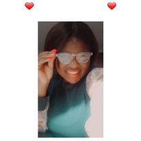

About ME

My Name is Vuyiseka Mnweba and I'm a software development candidate, who focuses on Scrum master.
I'm an active person who loves coding and my current skills that I learned are HTML,CSS,Bootstrap and a little bit of javascipt.
I am a team builder aswell player I have good communication skilss and I am constitance.
My obsticles are not being able to work under pressure,but I always set goals for myself in order for task to finished i make
sure that I plan accordingly.One of my strong points is being interactive and also responsible.